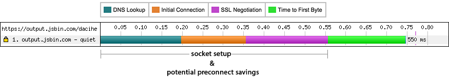
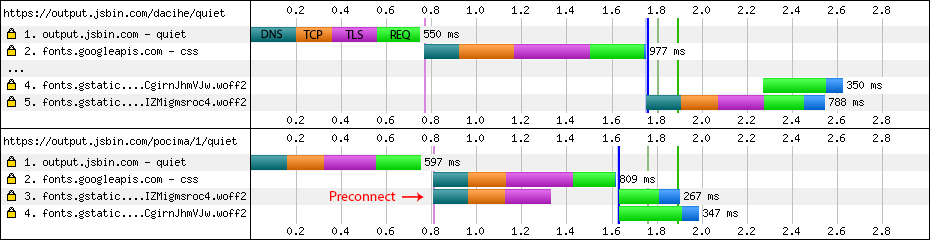
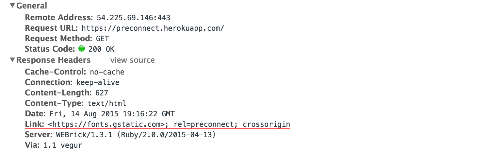
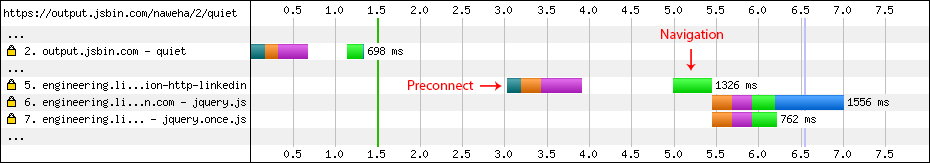

Eliminating Roundtrips with Preconnect
The "simple" act of initiating an HTTP request can incur many roundtrips before the actual request bytes are routed to the server: the browser may have to resolve the DNS name, perform the TCP handshake, and negotiate the TLS tunnel if a secure socket is required. All accounted for, that's anywhere from one to three — and more in unoptimized cases — roundtrips of latency to set up the socket before the actual request bytes are routed to the server.

Modern browsers try their best to anticipate what connections the site will need before the actual request is made. By initiating early "preconnects", the browser can set up the necessary sockets ahead of time and eliminate the costly DNS, TCP, and TLS roundtrips from the critical path of the actual request. That said, as smart as modern browsers are, they cannot reliably predict all the preconnect targets for each and every website.
The good news is that we can — finally — help the browser; we can tell the browser which sockets we will need ahead of initiating the actual requests via the new preconnect hint shipping in Firefox 39 and Chrome 46! Let's take a look at some hands-on examples of how and where you might want to use it.
Preconnect for dynamic request URLs
Your application may not know the full resource URL ahead of time due to conditional loading logic, UA adaptation, or other reasons. However, if the origin from which the resources are going to be fetched is known, then a preconnect hint is a perfect fit. Consider the following example with Google Fonts, both with and without the preconnect hint:

In the first trace, the browser fetches the HTML and discovers that it needs a CSS resource residing on fonts.googleapis.com. With that downloaded it builds the CSSOM, determines that the page will need two fonts, and initiates requests for each from fonts.gstatic.com — first though, it needs to perform the DNS, TCP, and TLS handshakes with that origin, and once the socket is ready both requests are multiplexed over the HTTP/2 connection.
<link href='https://fonts.gstatic.com' rel='preconnect' crossorigin>
<link href='https://fonts.googleapis.com/css?family=Roboto+Slab:700|Open+Sans' rel='stylesheet'>In the second trace, we add the preconnect hint in our markup indicating that the application will fetch resources from fonts.gstatic.com. As a result, the browser begins the socket setup in parallel with the CSS request, completes it ahead of time, and allows the font requests to be sent immediately! In this particular scenario, preconnect removes three RTTs from the critical path and eliminates over half of second of latency.
crossorigin attribute on the preconnect hint: the browser maintains a separate pool of sockets for this mode.
Initiating preconnect via Link HTTP header
In addition to declaring the preconnect hints via HTML markup, we can also deliver them via an HTTP Link header. For example, to achieve the same preconnect benefits as above, the server could have delivered the preconnect hint without modifying the page markup - see below. The Link header mechanism allows each response to indicate to the browser which other origins it should connect to ahead of time. For example, included widgets and dependencies can help optimize performance by indicating which other origins they will need, and so on.

Preconnect with JavaScript
We don't have to declare all preconnect origins upfront. The application can invoke preconnects in response to user input, anticipated activity, or other user signals with the help of JavaScript. For example, consider the case where an application anticipates the likely navigation target and issues an early preconnect:
function preconnectTo(url) {
var hint = document.createElement("link");
hint.rel = "preconnect";
hint.href = url;
document.head.appendChild(hint);
}
The user starts on jsbin.com; at ~3.0 second mark the page determines that the user might be navigating to engineering.linkedin.com and initiates a preconnect for that origin; at ~5.0 second mark the user initiates the navigation, and the request is dispatched without blocking on DNS, TCP, or TLS handshakes — nearly a second saved for the navigation!
Preconnect often, Preconnect wisely
Preconnect is an important tool in your optimization toolbox. As above examples illustrate, it can eliminate many costly roundtrips from your request path — in some cases reducing the request latency by hundreds and even thousands of milliseconds. That said, use it wisely: each open socket incurs costs both on the client and server, and you want to avoid opening sockets that might go unused. As always, apply, measure real-world impact, and iterate to get the best performance mileage from this feature.
Finally, for debugging purposes, do note that preconnect directives are treated as optimization hints: the browser might not act on each directive each and every time, and the browser is allowed to adjust its logic to perform a partial handshake - e.g. fall back to DNS lookup only, or DNS+TCP for TLS connections.